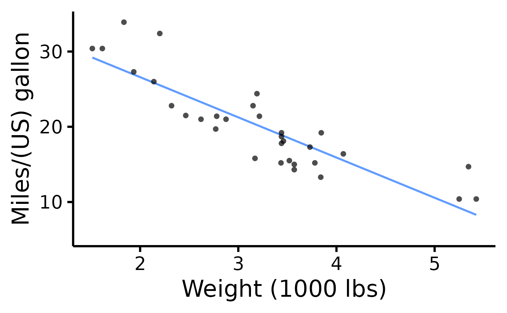
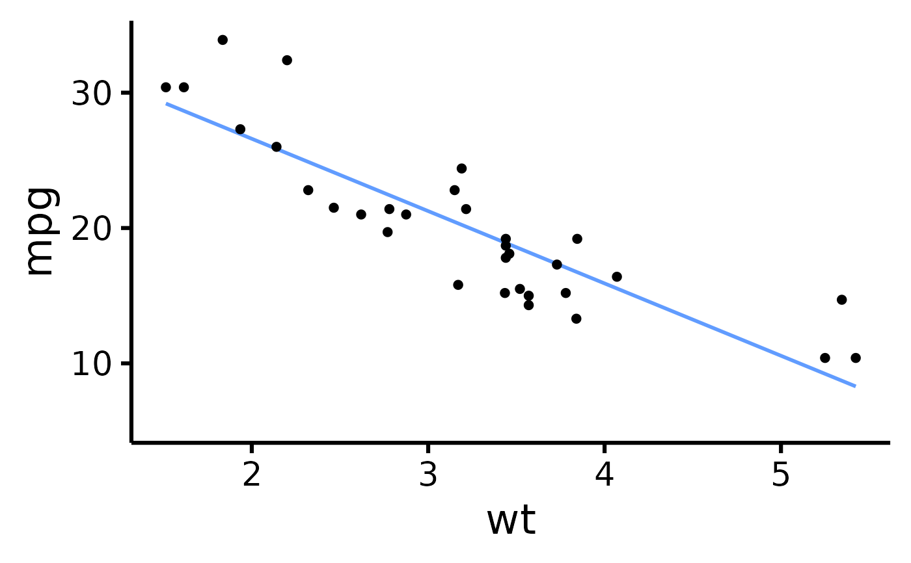
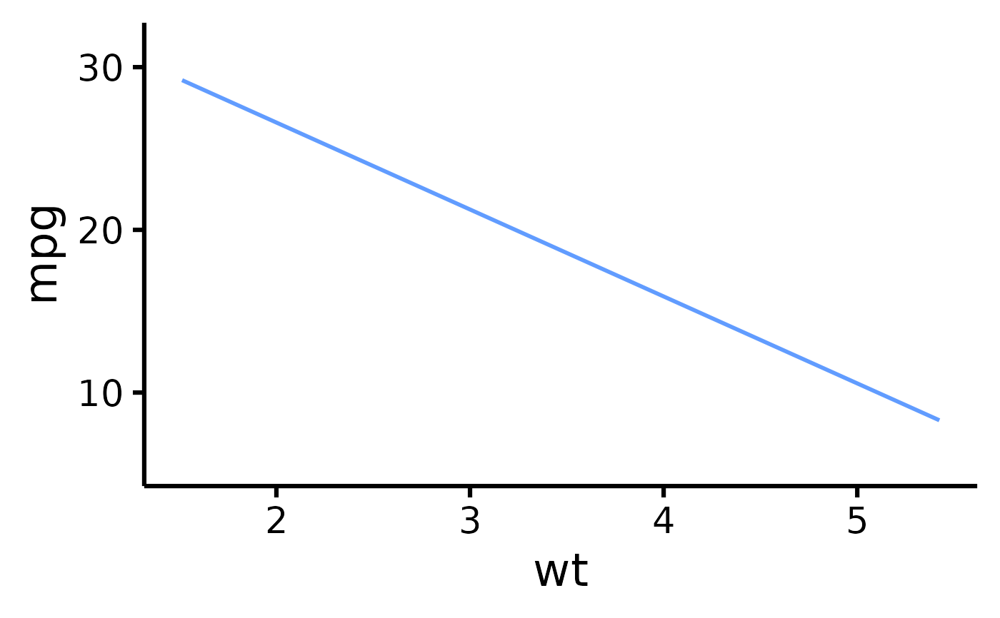
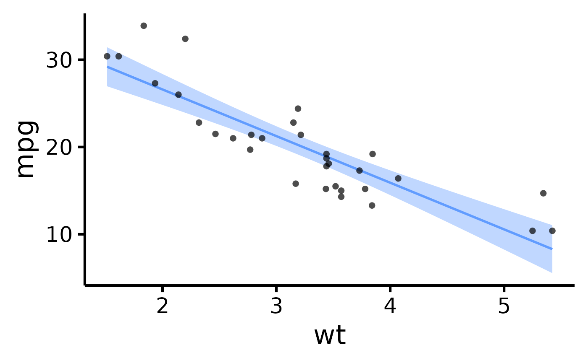
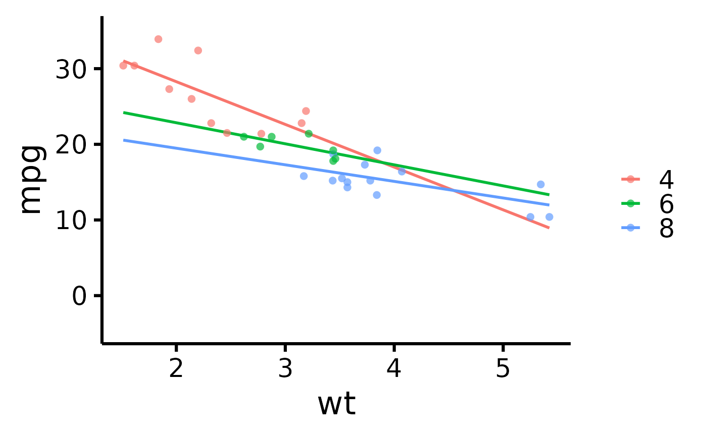
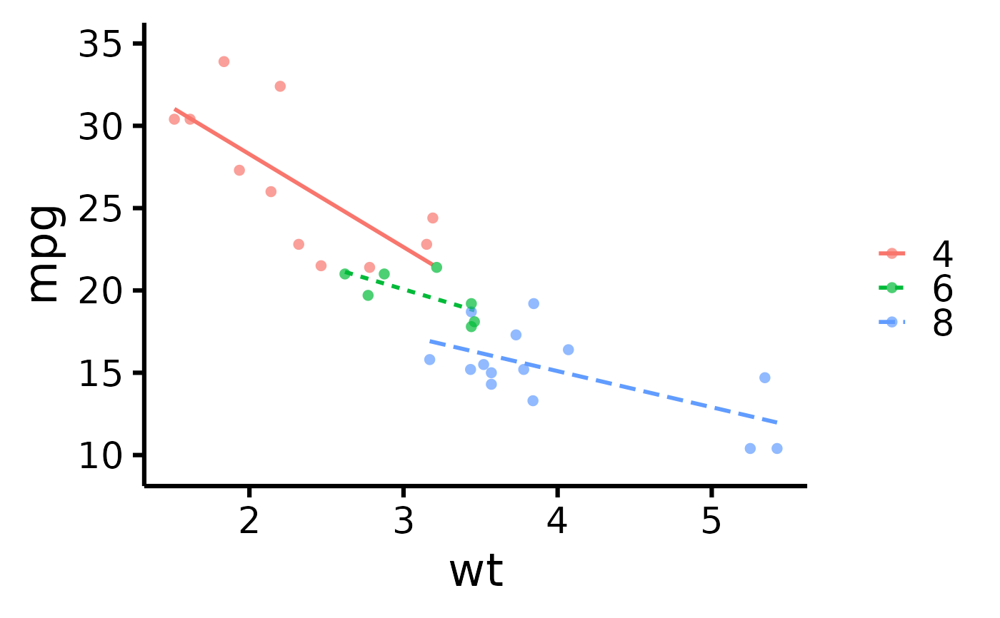

Make nice scatter plots easily.
Usage
nice_scatter(
data,
predictor,
response,
xtitle = predictor,
ytitle = response,
has.points = TRUE,
has.jitter = FALSE,
alpha = 0.7,
has.line = TRUE,
method = "lm",
has.confband = FALSE,
has.fullrange = FALSE,
has.linetype = FALSE,
has.shape = FALSE,
xmin,
xmax,
xby = 1,
ymin,
ymax,
yby = 1,
has.legend = FALSE,
legend.title = "",
group = NULL,
colours = "#619CFF",
groups.order = "none",
groups.labels = NULL,
groups.alpha = NULL,
has.r = FALSE,
r.x = Inf,
r.y = -Inf,
has.p = FALSE,
p.x = Inf,
p.y = -Inf,
has.ids = FALSE,
id.column = NULL,
has.group.r = FALSE,
group.r.x = NULL,
group.r.y = NULL,
has.group.p = FALSE,
group.p.x = NULL,
group.p.y = NULL
)Arguments
- data
The data frame.
- predictor
The independent variable to be plotted.
- response
The dependent variable to be plotted.
- xtitle
An optional y-axis label, if desired.
- ytitle
An optional x-axis label, if desired.
- has.points
Whether to plot the individual observations or not.
- has.jitter
Alternative to
has.points. "Jitters" the observations to avoid overlap (overplotting). Use one or the other, not both.- alpha
The desired level of transparency.
- has.line
Whether to plot the regression line(s).
- method
Which method to use for the regression line, either
"lm"(default) or"loess".- has.confband
Logical. Whether to display the confidence band around the slope.
- has.fullrange
Logical. Whether to extend the slope beyond the range of observations.
- has.linetype
Logical. Whether to change line types as a function of group.
- has.shape
Logical. Whether to change shape of observations as a function of group.
- xmin
The minimum score on the x-axis scale.
- xmax
The maximum score on the x-axis scale.
- xby
How much to increase on each "tick" on the x-axis scale.
- ymin
The minimum score on the y-axis scale.
- ymax
The maximum score on the y-axis scale.
- yby
How much to increase on each "tick" on the y-axis scale.
- has.legend
Logical. Whether to display the legend or not.
- legend.title
The desired legend title.
- group
The group by which to plot the variable
- colours
Desired colours for the plot, if desired.
- groups.order
Specifies the desired display order of the groups on the legend. Either provide the levels directly, or a string: "increasing" or "decreasing", to order based on the average value of the variable on the y axis, or "string.length", to order from the shortest to the longest string (useful when working with long string names). "Defaults to "none".
- groups.labels
Changes groups names (labels). Note: This applies after changing order of level.
- groups.alpha
The manually specified transparency desired for the groups slopes. Use only when plotting groups separately.
- has.r
Whether to display the correlation coefficient, the r-value.
- r.x
The x-axis coordinates for the r-value.
- r.y
The y-axis coordinates for the r-value.
- has.p
Whether to display the p-value.
- p.x
The x-axis coordinates for the p-value.
- p.y
The y-axis coordinates for the p-value.
- has.ids
Whether to display point IDs/labels on the plot.
- id.column
The column name to use for point labels. If not specified, row names will be used.
- has.group.r
Whether to display correlation coefficients for each group separately when using grouping.
- group.r.x
The x-axis coordinates for group correlation coefficients. If NULL (default), will be positioned at the left side of the plot.
- group.r.y
The y-axis coordinates for group correlation coefficients. If NULL (default), will be positioned at the top of the plot.
- has.group.p
Whether to display p-values for each group separately.
- group.p.x
The x-axis coordinates for group p-values. If NULL (default), will be positioned at the right side of the plot.
- group.p.y
The y-axis coordinates for group p-values. If NULL (default), will be positioned at the top of the plot.
See also
Visualize group differences via violin plots:
nice_violin. Tutorial:
https://rempsyc.remi-theriault.com/articles/scatter
Examples
# Make the basic plot
nice_scatter(
data = mtcars,
predictor = "wt",
response = "mpg"
)
# \donttest{
# Save a high-resolution image file to specified directory
ggplot2::ggsave("nicescatterplothere.pdf", width = 7,
height = 7, unit = "in", dpi = 300
) # change for your own desired path
# Change x- and y- axis labels
nice_scatter(
data = mtcars,
predictor = "wt",
response = "mpg",
ytitle = "Miles/(US) gallon",
xtitle = "Weight (1000 lbs)"
)

# Have points "jittered", loess method
nice_scatter(
data = mtcars,
predictor = "wt",
response = "mpg",
has.jitter = TRUE,
method = "loess"
)
# Change the transparency of the points
nice_scatter(
data = mtcars,
predictor = "wt",
response = "mpg",
alpha = 1
)

# Remove points
nice_scatter(
data = mtcars,
predictor = "wt",
response = "mpg",
has.points = FALSE,
has.jitter = FALSE
)

# Add confidence band
nice_scatter(
data = mtcars,
predictor = "wt",
response = "mpg",
has.confband = TRUE
)

# Set x- and y- scales manually
nice_scatter(
data = mtcars,
predictor = "wt",
response = "mpg",
xmin = 1,
xmax = 6,
xby = 1,
ymin = 10,
ymax = 35,
yby = 5
)
#> Warning: Removed 7 rows containing missing values or values outside the scale range
#> (`geom_line()`).
# Change plot colour
nice_scatter(
data = mtcars,
predictor = "wt",
response = "mpg",
colours = "blueviolet"
)
# Add correlation coefficient to plot and p-value
nice_scatter(
data = mtcars,
predictor = "wt",
response = "mpg",
has.r = TRUE,
has.p = TRUE
)
# Change location of correlation coefficient or p-value
nice_scatter(
data = mtcars,
predictor = "wt",
response = "mpg",
has.r = TRUE,
r.x = 4,
r.y = 25,
has.p = TRUE,
p.x = 5,
p.y = 20
)
# Plot by group
nice_scatter(
data = mtcars,
predictor = "wt",
response = "mpg",
group = "cyl"
)
# Use full range on the slope/confidence band
nice_scatter(
data = mtcars,
predictor = "wt",
response = "mpg",
group = "cyl",
has.fullrange = TRUE
)

# Remove lines
nice_scatter(
data = mtcars,
predictor = "wt",
response = "mpg",
group = "cyl",
has.line = FALSE
)
# Change order of labels on the legend
nice_scatter(
data = mtcars,
predictor = "wt",
response = "mpg",
group = "cyl",
groups.order = c(8, 4, 6)
)
# Change legend labels
nice_scatter(
data = mtcars,
predictor = "wt",
response = "mpg",
group = "cyl",
groups.labels = c("Weak", "Average", "Powerful")
)
# Warning: This applies after changing order of level
# Add a title to legend
nice_scatter(
data = mtcars,
predictor = "wt",
response = "mpg",
group = "cyl",
legend.title = "cylinders"
)
# Plot by group + manually specify colours
nice_scatter(
data = mtcars,
predictor = "wt",
response = "mpg",
group = "cyl",
colours = c("burlywood", "darkgoldenrod", "chocolate")
)
# Plot by group + use different line types for each group
nice_scatter(
data = mtcars,
predictor = "wt",
response = "mpg",
group = "cyl",
has.linetype = TRUE
)

# Plot by group + use different point shapes for each group
nice_scatter(
data = mtcars,
predictor = "wt",
response = "mpg",
group = "cyl",
has.shape = TRUE
)
# Display point IDs/labels
nice_scatter(
data = mtcars,
predictor = "wt",
response = "mpg",
has.ids = TRUE
)
# Display group correlations separately
nice_scatter(
data = mtcars,
predictor = "wt",
response = "mpg",
group = "cyl",
has.group.r = TRUE,
has.group.p = TRUE
)
# }